library(tidyverse)
library(brms)
library(tidybayes)
library(ggdist)For Lab 1, you had explored the data and looked at models built via lm() and via brms(using default priors). You had also drawn posterior samples after fitting the model.
For Lab 2, we continue with the Palmer Penguins. And we will look more at distributions and priors.
Again, there will be conceptual questions to answer as you work through this example, and exercises.
Part 3: Distributions all the way down
Given it’s a continuation of Lab 1, let’s begin by loading relevant packages, cleaning/pre-processing the data, and fitting lm() and the default brm models
Setup: Packages and data
We load the primary packages.
We want the same data set up as in the last lab.
# load the penguins data
data(penguins, package = "palmerpenguins")
# subset the data
chinstrap <- penguins %>%
filter(species == "Chinstrap")
glimpse(chinstrap)Rows: 68
Columns: 8
$ species <fct> Chinstrap, Chinstrap, Chinstrap, Chinstrap, Chinstra…
$ island <fct> Dream, Dream, Dream, Dream, Dream, Dream, Dream, Dre…
$ bill_length_mm <dbl> 46.5, 50.0, 51.3, 45.4, 52.7, 45.2, 46.1, 51.3, 46.0…
$ bill_depth_mm <dbl> 17.9, 19.5, 19.2, 18.7, 19.8, 17.8, 18.2, 18.2, 18.9…
$ flipper_length_mm <int> 192, 196, 193, 188, 197, 198, 178, 197, 195, 198, 19…
$ body_mass_g <int> 3500, 3900, 3650, 3525, 3725, 3950, 3250, 3750, 4150…
$ sex <fct> female, male, male, female, male, female, female, ma…
$ year <int> 2007, 2007, 2007, 2007, 2007, 2007, 2007, 2007, 2007…Models
Once again, we’ll fit the model
\[ \begin{align} \text{bill_length_mm}_i & = \beta_0 + \beta_1 \text{body_mass_g}_i + \epsilon_i \\ \epsilon_i & \sim \operatorname{Normal}(0, \sigma_\epsilon) , \end{align} \]
with both lm() and brm().
# OLS
fit1.ols <- lm(
data = chinstrap,
bill_length_mm ~ 1 + body_mass_g
)
# Bayes
fit1.b <- brm(
data = chinstrap,
bill_length_mm ~ 1 + body_mass_g
)Compiling Stan program...Trying to compile a simple C fileStart samplingposterior_summary(fit1.b) Estimate Est.Error Q2.5 Q97.5
b_Intercept 3.217753e+01 3.5185513514 2.536101e+01 3.913705e+01
b_body_mass_g 4.465013e-03 0.0009387541 2.626183e-03 6.282621e-03
sigma 2.932174e+00 0.2598294337 2.480331e+00 3.481208e+00
Intercept 4.884582e+01 0.3711428007 4.814181e+01 4.958049e+01
lprior -4.300564e+00 0.0706590358 -4.459214e+00 -4.183931e+00
lp__ -1.723671e+02 1.3242335672 -1.757457e+02 -1.708953e+02Bayesians have many kinds of distributions
In Bayesian statistics, we have at least 6 distributions to keep track of. Those are:
- the likelihood distributions
- the prior parameter distribution (aka priors)
- the prior predictive distributions
- the posterior parameter distributions (aka posteriors)
- the posterior-predictive distribution
In many respect, it’s distributions ‘all the way down,’ with Bayesians. This can be indeed be difficult to keep track of at first. But since this is true for any class of Bayesian models (not just regression), you’ll hopefully get used to it.
QUESTION 1: How would you represent these 6 distributions mathematically, using \(P_0\)’\(P\), \(D\), \(|\), and \(\theta\) ?
Tip
Hint 1: Many of these terms were in the Bayes Rule.
Answer:
likelihood distribution ~ P (D|θ)
priors ~ P_0(θ)
prior predictive distribution ~ P_0(D)
posterior parameter distributions (posterior) ~ P(θ|D)
posterior predictive distribution ~ P(D_new|D_old)
We also have some other distributions that follow from these. For example, - the distributions of the model expectations (i.e., the predicted means)
Likelihood distributions.
We are approaching Bayesian statistics from a likelihood-based perspective. That is, we situate regression models within the greater context of a likelihood function. (There are ways to do non-parametric Bayesian statistics, which don’t focus on likelihoods. We won’t get into that right now.)
So far, we have been using the conventional Gaussian likelihood. If we have some variable \(y\), we can express it as normally distributed by
\[ \operatorname{Normal}(y \mid \mu, \sigma) = \frac{1}{\sqrt{2 \pi \sigma}} \exp \left( \frac{1}{2} \left( \frac{y - \mu}{\sigma}\right)^2\right), \]
where \(\mu\) is the mean and \(\sigma\) is the standard deviation. With this likelihood,
- \(\mu \in \mathbb R\)
- the mean can be any real number, ranging from \(-\infty\) to \(\infty\)
- \(\sigma \in \mathbb R_{> 0}\)
- the standard deviation can take on any real number greater than zero.
It’s also the assumption
- \(y \in \mathbb R\)
- the focal variable \(y\) can be any real number, ranging from \(-\infty\) to \(\infty\).
One of the ways we wrote our model formula back in the first file was
\[ \begin{align} \text{bill_length_mm}_i & \sim \operatorname{Normal}(\mu_i, \sigma) \\ \mu_i & = \beta_0 + \beta_1 \text{body_mass_g}_i, \end{align} \]
and further in the discussion, we updated that equation with the posterior means for our three parameters to
\[ \begin{align} \text{bill_length_mm}_i & \sim \operatorname{Normal}(\mu_i, 2.92) \\ \mu_i & = 32.2 + 0.004 \text{body_mass_g}_i. \end{align} \]
Before we get into this, though, let’s back up and consider an intercept-only model of the form
\[ \begin{align} \text{bill_length_mm}_i & \sim \operatorname{Normal}(\mu_i, \sigma) \\ \mu_i & = \beta_0 , \end{align} \]
where there is no predictor variable. Here’s how to fit the model with brm().
# Bayes
fit0.b <- brm(
data = chinstrap,
bill_length_mm ~ 1
)Compiling Stan program...Trying to compile a simple C fileStart samplingLet’s look at the model summary.
summary(fit0.b) Family: gaussian
Links: mu = identity; sigma = identity
Formula: bill_length_mm ~ 1
Data: chinstrap (Number of observations: 68)
Draws: 4 chains, each with iter = 2000; warmup = 1000; thin = 1;
total post-warmup draws = 4000
Regression Coefficients:
Estimate Est.Error l-95% CI u-95% CI Rhat Bulk_ESS Tail_ESS
Intercept 48.85 0.41 48.06 49.64 1.00 3823 2652
Further Distributional Parameters:
Estimate Est.Error l-95% CI u-95% CI Rhat Bulk_ESS Tail_ESS
sigma 3.37 0.29 2.87 4.00 1.00 3440 2846
Draws were sampled using sampling(NUTS). For each parameter, Bulk_ESS
and Tail_ESS are effective sample size measures, and Rhat is the potential
scale reduction factor on split chains (at convergence, Rhat = 1).The intercept parameter \(\beta_0\) is a stand-in for \(\mu\). The \(\sigma\) parameter is just \(\sigma\). Here they are in a plot.
draws <- as_draws_df(fit0.b)
draws %>%
rename(`beta[0]==mu` = b_Intercept) %>%
pivot_longer(`beta[0]==mu`:sigma, names_to = "parameter") %>%
ggplot(aes(x = value)) +
stat_halfeye(.width = .95, normalize = "panels") +
scale_y_continuous(NULL, breaks = NULL) +
xlab("parameter space") +
facet_wrap(~ parameter, scales = "free", labeller = label_parsed)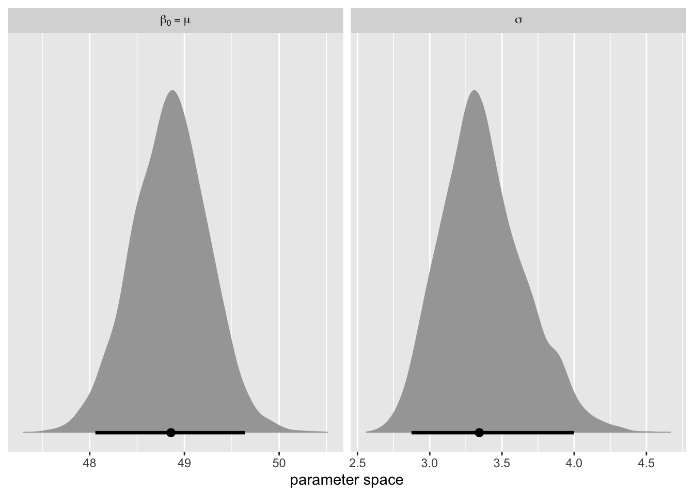
Here are the posterior means for those two parameters.
mu <- mean(draws$b_Intercept)
sigma <- mean(draws$sigma)
mu; sigma[1] 48.85113[1] 3.372572We can use dnorm() to compute the shape of \(\operatorname{Normal}(48.8, 3.4)\).
tibble(y = seq(from = 30, to = 70, by = 0.1)) %>%
mutate(density = dnorm(x = y, mean = mu, sd = sigma)) %>%
ggplot(aes(x = y, y = density)) +
geom_line() +
xlab("bill_length_mm")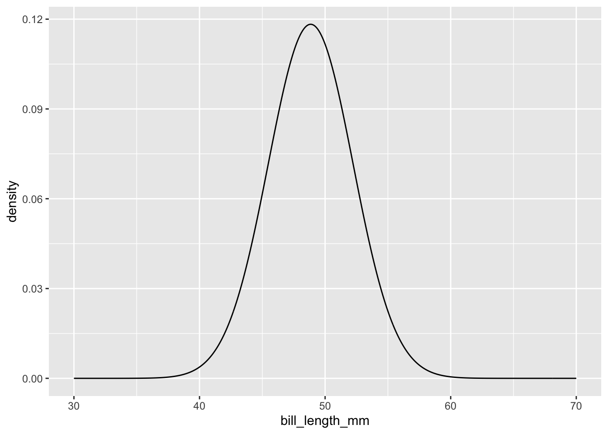
We can compare this to the sample distribution of the bill_length_mm data:
chinstrap %>%
ggplot(aes(x = bill_length_mm)) +
geom_histogram(aes(y = after_stat(density)),
binwidth = 2.5) +
geom_line(data = tibble(bill_length_mm = seq(from = 30, to = 70, by = 0.1)),
aes(y = dnorm(x = bill_length_mm, mean = mu, sd = sigma)),
color = "red")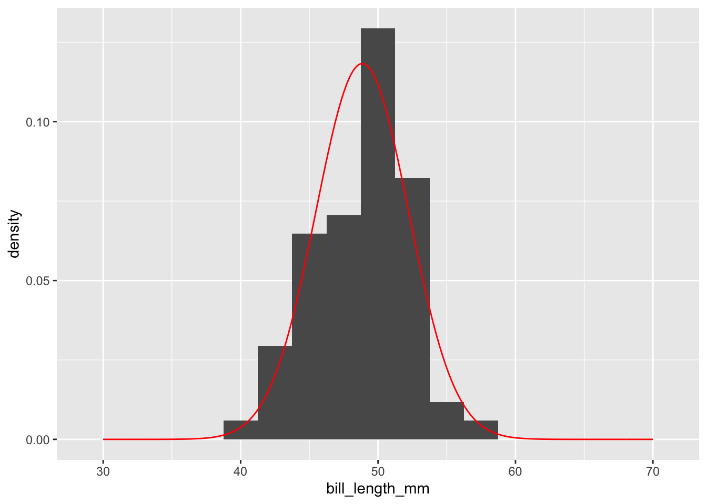
It’s not a great fit, but not horrible either.
Now let’s see what this means for our univariable model fit1.b. First, let’s learn about the posterior_summary() function, which we’ll use to save a few posterior means.
posterior_summary(fit1.b) Estimate Est.Error Q2.5 Q97.5
b_Intercept 3.217753e+01 3.5185513514 2.536101e+01 3.913705e+01
b_body_mass_g 4.465013e-03 0.0009387541 2.626183e-03 6.282621e-03
sigma 2.932174e+00 0.2598294337 2.480331e+00 3.481208e+00
Intercept 4.884582e+01 0.3711428007 4.814181e+01 4.958049e+01
lprior -4.300564e+00 0.0706590358 -4.459214e+00 -4.183931e+00
lp__ -1.723671e+02 1.3242335672 -1.757457e+02 -1.708953e+02b0 <- posterior_summary(fit1.b)[1, 1]
b1 <- posterior_summary(fit1.b)[2, 1]
sigma <- posterior_summary(fit1.b)[3, 1]Now we plot.
crossing(body_mass_g = seq(from = 2500, to = 5000, length.out = 200),
bill_length_mm = seq(from = 35, to = 60, length.out = 200)) %>%
mutate(density = dnorm(x = bill_length_mm,
mean = b0 + b1 * body_mass_g,
sd = sigma)) %>%
ggplot(aes(x = body_mass_g, y = bill_length_mm)) +
geom_raster(aes(fill = density),
interpolate = TRUE) +
geom_point(data = chinstrap,
shape = 21, color = "white", fill = "black", stroke = 1/4) +
scale_fill_viridis_c(option = "A", begin = .15, limits = c(0, NA)) +
coord_cartesian(xlim = range(chinstrap$body_mass_g),
ylim = range(chinstrap$bill_length_mm))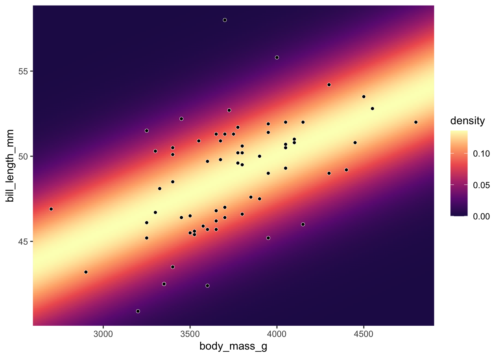
Our univariable model fit1.b can be viewed as something like a 3-dimensional Gaussian hill.
Prior distributions & Prior predictive distributions.
Let’s hold off on this for a bit.
Parameter distributions.
Up above, we plotted the posterior distributions for our intercept-only fit0.b model. Here they are again.
draws %>%
rename(`beta[0]==mu` = b_Intercept) %>%
pivot_longer(`beta[0]==mu`:sigma, names_to = "parameter") %>%
ggplot(aes(x = value)) +
stat_halfeye(.width = .99, normalize = "panels",
# customize some of the aesthetics
fill = "lightskyblue1", color = "royalblue",
point_color = "darkorchid4", point_size = 4, shape = 15) +
scale_y_continuous(NULL, breaks = NULL) +
labs(title = "fit0.b",
subtitle = "This time we used 99% intervals, and got silly with the colors.",
x = "parameter space") +
facet_wrap(~ parameter, scales = "free", labeller = label_parsed)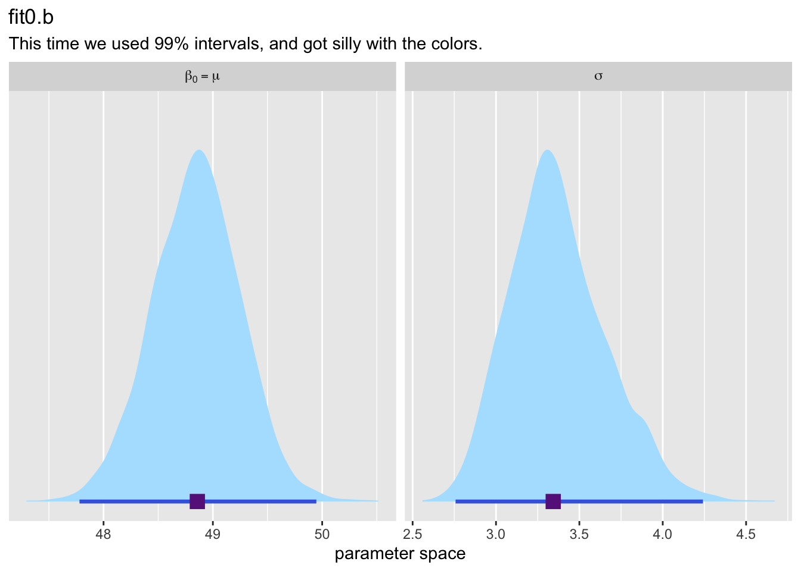
We might practice making a similar plot for our univariable model fit1.b.
as_draws_df(fit1.b) %>%
rename(`beta[0]` = b_Intercept,
`beta[1]` = b_body_mass_g) %>%
pivot_longer(cols = c(`beta[0]`, `beta[1]`, sigma),
names_to = "parameter") %>%
ggplot(aes(x = value)) +
stat_histinterval(.width = .95, normalize = "panels") +
scale_y_continuous(NULL, breaks = NULL) +
labs(title = "fit1.b",
subtitle = "Using good old 95% intervals, but switching to histograms",
x = "parameter space") +
facet_wrap(~ parameter, scales = "free", labeller = label_parsed)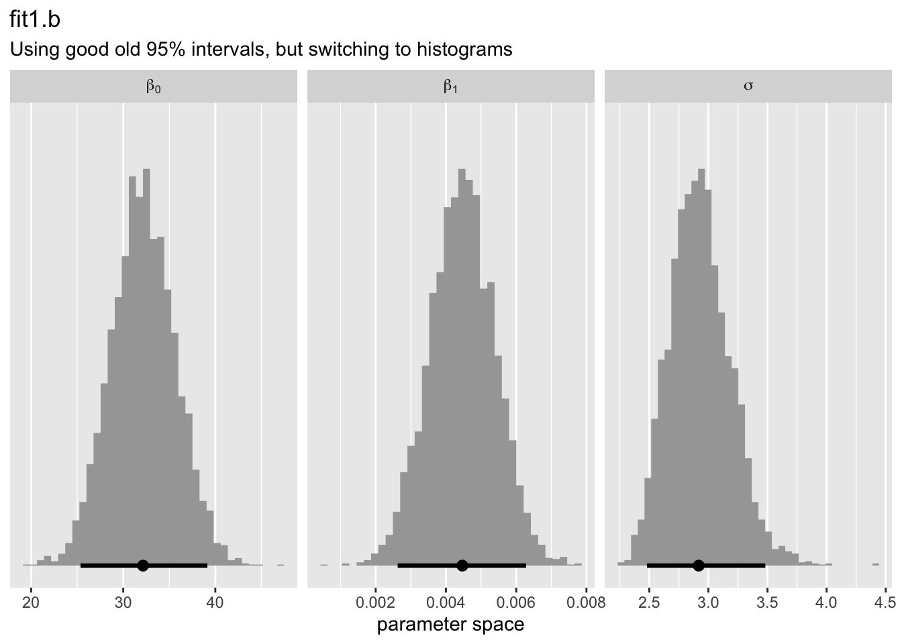
Some authors, like John Kruschke, have a strong preference for plotting their posteriors with histograms, rather than density plots.
Distributions of the model expectations.
Take another look at the conditional_effects() plot from earlier.
conditional_effects(fit1.b) %>%
plot(points = TRUE)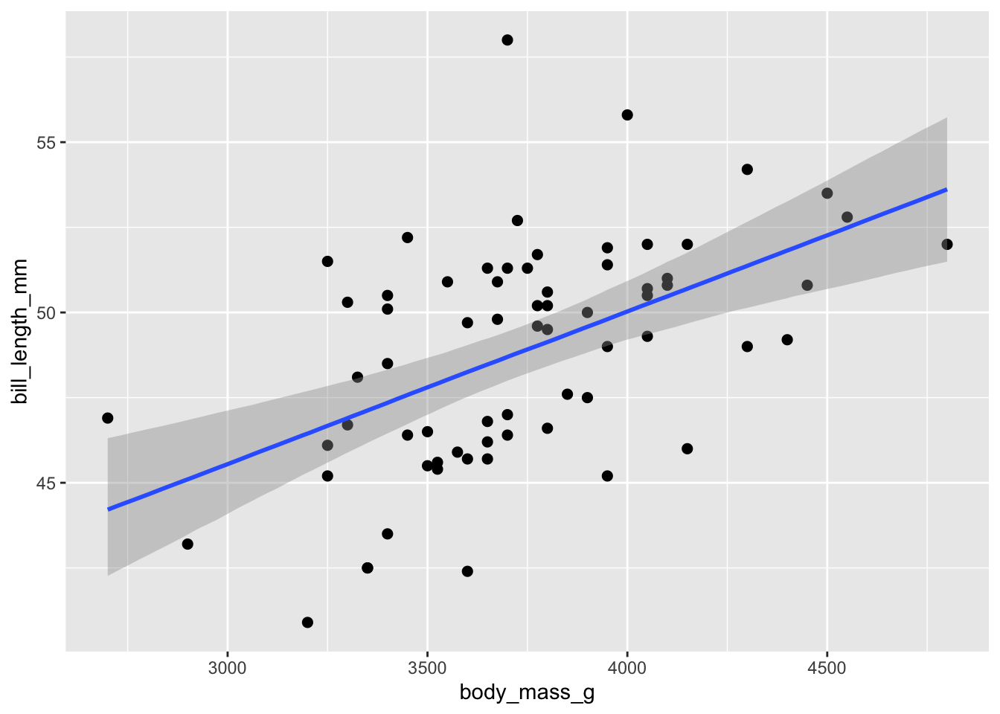
The blue line is the posterior mean, for the \(\mu_i\), the model-based mean for bill_length_mm, given the value for the predictor body_mass_g. The semitransparent gray ribbon marks the percentile-based interval for the conditional mean.
We can make a similar plot with the fitted() function. First we’ll need a predictor grid, we’ll call nd.
nd <- tibble(body_mass_g = seq(
from = min(chinstrap$body_mass_g),
to = max(chinstrap$body_mass_g),
length.out = 100))
glimpse(nd)Rows: 100
Columns: 1
$ body_mass_g <dbl> 2700.000, 2721.212, 2742.424, 2763.636, 2784.848, 2806.061…Now pump nd into the fitted() function.
fitted(fit1.b, newdata = nd) %>%
# subset the first 6 rows
head() Estimate Est.Error Q2.5 Q97.5
[1,] 44.23307 1.0332340 42.26531 46.30783
[2,] 44.32778 1.0146750 42.39668 46.36310
[3,] 44.42249 0.9961682 42.52449 46.41837
[4,] 44.51720 0.9777167 42.65175 46.47754
[5,] 44.61192 0.9593237 42.78476 46.53316
[6,] 44.70663 0.9409925 42.90636 46.59023Now plot.
fitted(fit1.b, newdata = nd) %>%
data.frame() %>%
bind_cols(nd) %>%
ggplot(aes(x = body_mass_g)) +
geom_ribbon(aes(ymin = Q2.5, ymax = Q97.5),
alpha = 1/3) +
geom_line(aes(y = Estimate)) +
# add the data
geom_point(data = chinstrap,
aes(y = bill_length_mm))Look what happens if we augment the probs argument in fitted().
fitted(fit1.b,
newdata = nd,
probs = c(.025, .975, .25, .75)) %>%
data.frame() %>%
bind_cols(nd) %>%
ggplot(aes(x = body_mass_g)) +
# 95% range
geom_ribbon(aes(ymin = Q2.5, ymax = Q97.5),
alpha = 1/4) +
# 50% range
geom_ribbon(aes(ymin = Q25, ymax = Q75),
alpha = 1/4) +
geom_line(aes(y = Estimate)) +
geom_point(data = chinstrap,
aes(y = bill_length_mm))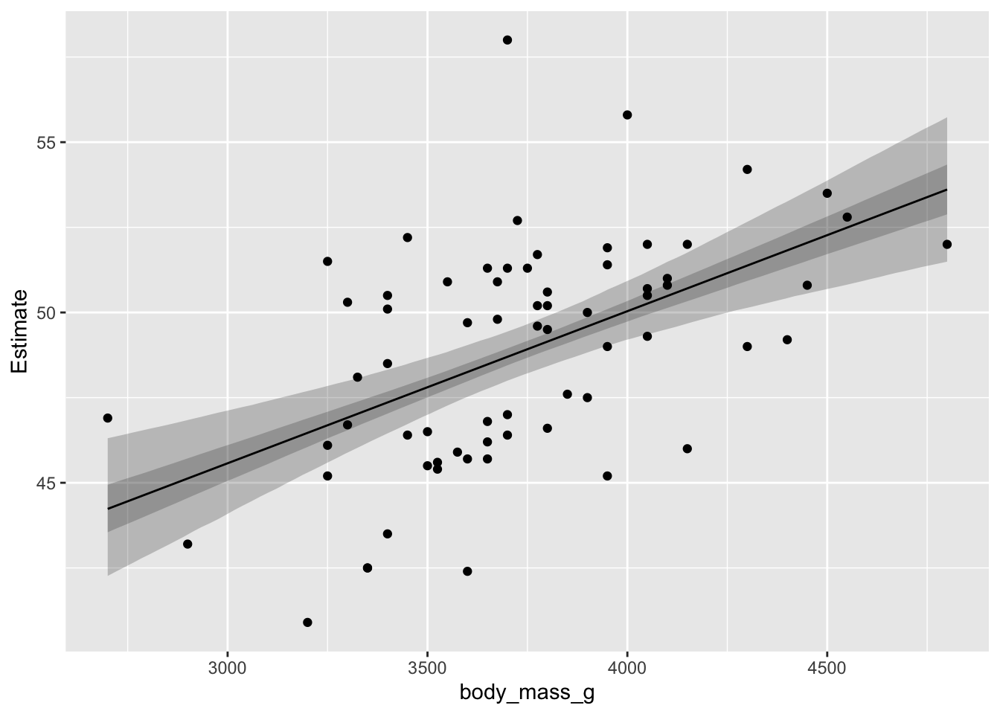
Now look what happens if we set summary = FALSE.
fitted(fit1.b,
newdata = nd,
summary = FALSE) %>%
str() num [1:4000, 1:100] 44.2 44.3 44.6 43.7 42.6 ...We get full 4,000 draw posterior distributions for each of the 100 levels of the predictor body_mass_g. Now look at what happens if we wrangle that output a little, and plot with aid from stat_lineribbon() from the ggdist package.
fitted(fit1.b,
newdata = nd,
summary = F) %>%
data.frame() %>%
set_names(pull(nd, body_mass_g)) %>%
mutate(draw = 1:n()) %>%
pivot_longer(-draw) %>%
mutate(body_mass_g = as.double(name)) %>%
ggplot(aes(x = body_mass_g, y = value)) +
stat_lineribbon() +
scale_fill_brewer() +
coord_cartesian(ylim = range(chinstrap$bill_length_mm)) +
theme_classic()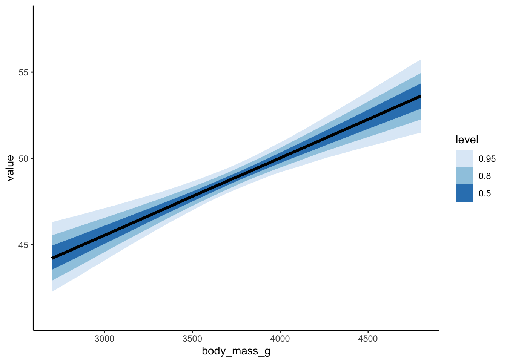
Look what happens when we request more intervals in the .width argument.
fitted(fit1.b,
newdata = nd,
summary = F) %>%
data.frame() %>%
set_names(pull(nd, body_mass_g)) %>%
mutate(draw = 1:n()) %>%
pivot_longer(-draw) %>%
mutate(body_mass_g = as.double(name)) %>%
ggplot(aes(x = body_mass_g, y = value)) +
# make more ribbons
stat_lineribbon(.width = c(.1, .2, .3, .4, .5, .6, .7, .8, .9),
# remove the line
linewidth = 0) +
scale_fill_brewer() +
coord_cartesian(ylim = range(chinstrap$bill_length_mm)) +
theme_classic()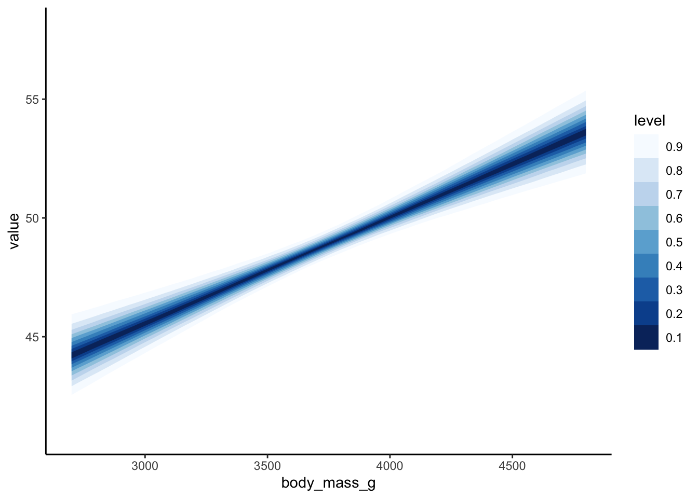
The conditional mean, \(\mu_i\), has its own distribution. We can take this visualization approach even further to make a color gradient.
fitted(fit1.b,
newdata = nd,
summary = F) %>%
data.frame() %>%
set_names(pull(nd, body_mass_g)) %>%
mutate(draw = 1:n()) %>%
pivot_longer(-draw) %>%
mutate(body_mass_g = as.double(name)) %>%
ggplot(aes(x = body_mass_g, y = value, fill = after_stat(.width))) +
# make more ribbons
stat_lineribbon(.width = ppoints(50)) +
scale_fill_distiller(limits = 0:1) +
coord_cartesian(ylim = range(chinstrap$bill_length_mm)) +
theme_classic()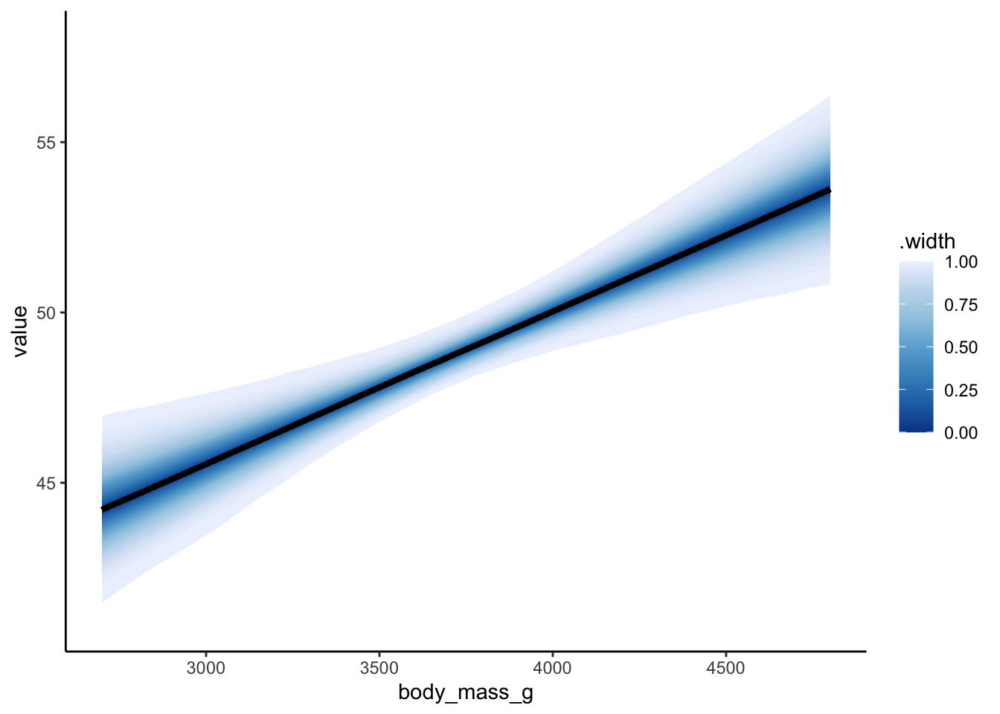
For technical details on this visualization approach, go here: https://mjskay.github.io/ggdist/articles/lineribbon.html#lineribbon-gradients.
The ggdist package even has an experimental visualization approach that’s based on density gradients, rather than interval-width gradients. Since this is experimental, I’m not going to go into the details. But if you’re curious and adventurous, you can learn more here: https://mjskay.github.io/ggdist/articles/lineribbon.html#lineribbon-density-gradients.
Posterior-predictive distributions.
The last section showed the posterior distributions for the model expectations (i.e., the conditional means). In the context of the Gaussian distribution, that’s \(\mu\), or \(\mu_i\) in the case of the univariable model fit1.b. But the whole Gaussian distribution includes \(\mu\) and \(\sigma\).
This is where the predict() function comes in. First, we compare the fitted() output to predict().
fitted(fit1.b, newdata = nd) %>%
# subset the first 6 rows
head() Estimate Est.Error Q2.5 Q97.5
[1,] 44.23307 1.0332340 42.26531 46.30783
[2,] 44.32778 1.0146750 42.39668 46.36310
[3,] 44.42249 0.9961682 42.52449 46.41837
[4,] 44.51720 0.9777167 42.65175 46.47754
[5,] 44.61192 0.9593237 42.78476 46.53316
[6,] 44.70663 0.9409925 42.90636 46.59023predict(fit1.b, newdata = nd) %>%
# subset the first 6 rows
head() Estimate Est.Error Q2.5 Q97.5
[1,] 44.24835 3.185415 38.04652 50.53301
[2,] 44.25923 3.143345 38.04964 50.43316
[3,] 44.44828 3.027479 38.38795 50.39715
[4,] 44.51656 3.138462 38.48194 50.77914
[5,] 44.63323 3.107523 38.28555 50.65644
[6,] 44.61252 3.086634 38.60401 50.77928The posterior means (Estimate) are about the same, but the SD’s (Est.Error) are much larger in the predict() output, and the widths of the 95% intervals are too. Let’s make a plot.
predict(fit1.b, newdata = nd) %>%
data.frame() %>%
bind_cols(nd) %>%
ggplot(aes(x = body_mass_g)) +
geom_ribbon(aes(ymin = Q2.5, ymax = Q97.5),
alpha = 1/3) +
geom_line(aes(y = Estimate)) +
# add the data
geom_point(data = chinstrap,
aes(y = bill_length_mm)) +
coord_cartesian(ylim = range(chinstrap$bill_length_mm))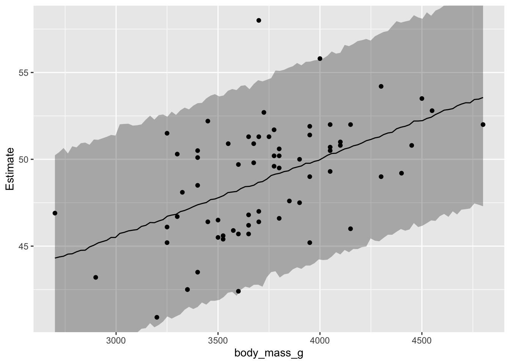
The gray band is the 95% interval for the entire posterior predictive distribution, not just the mean. In a good model, about 95% of the data points should be within those bands.
Discuss how the jagged lines have to do with the uncertainty in \(\sigma\).
If we wanted to, we could integrate the fitted()-based conditional posterior mean, with the predict()-based posterior-predictive distribution.
# save the fitted() results
f <- fitted(fit1.b, newdata = nd) %>%
data.frame() %>%
bind_cols(nd)
predict(fit1.b, newdata = nd) %>%
data.frame() %>%
bind_cols(nd) %>%
ggplot(aes(x = body_mass_g)) +
# 95% posterior-predictive range
geom_ribbon(aes(ymin = Q2.5, ymax = Q97.5),
alpha = 1/4) +
# 95% conditional mean range
geom_ribbon(data = f,
aes(ymin = Q2.5, ymax = Q97.5),
alpha = 1/4) +
# posterior mean of the conditional mean
geom_line(data = f,
aes(y = Estimate)) +
# original data
geom_point(data = chinstrap,
aes(y = bill_length_mm)) +
coord_cartesian(ylim = range(chinstrap$bill_length_mm))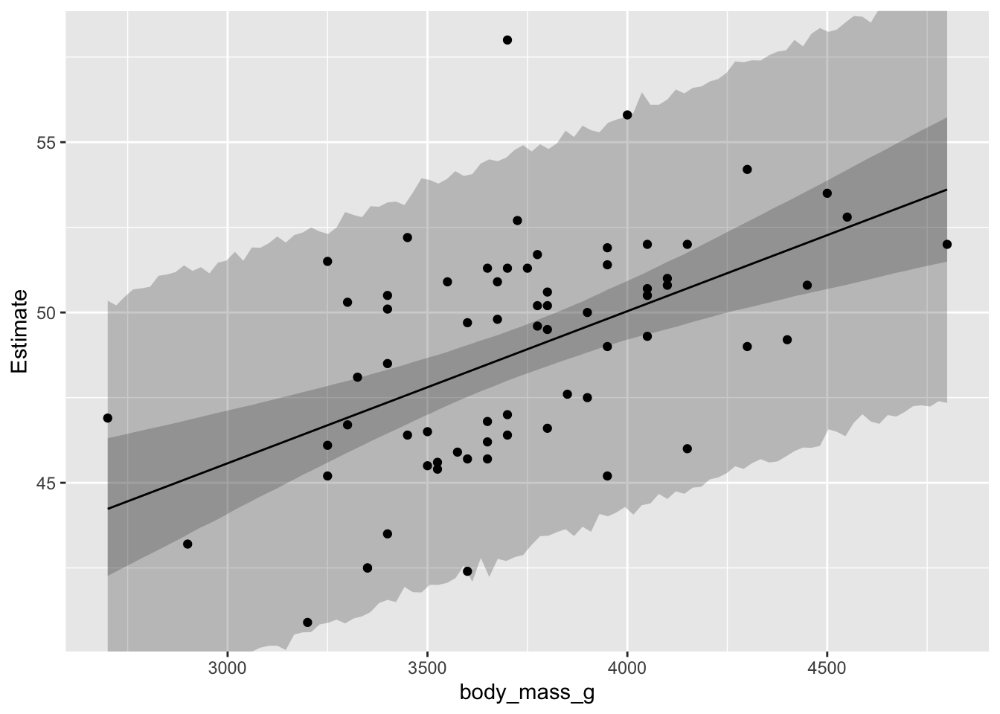
It’s the posterior predictive distribution that we use to predict new data points. For example, here’s what happens if we use predict() without the newdata argument.
predict(fit1.b) %>%
head() Estimate Est.Error Q2.5 Q97.5
[1,] 47.89312 2.990002 42.05939 53.86073
[2,] 49.61706 2.956716 43.61991 55.49438
[3,] 48.44201 2.999505 42.50396 54.18166
[4,] 47.93548 2.986245 42.35192 54.05517
[5,] 48.80950 2.924799 42.90281 54.38083
[6,] 49.83768 2.968353 44.06186 55.71937We get posterior predictive summaries for each of the original data points. Here’s what happens if we set summary = FALSE.
predict(fit1.b, summary = FALSE) %>%
str() num [1:4000, 1:68] 50.7 40 51.6 48.3 46.1 ...
- attr(*, "dimnames")=List of 2
..$ : NULL
..$ : NULLThis time, we got 4,000 posterior draws for each. We can reduce that output with the ndraws argument.
predict(fit1.b, summary = FALSE, ndraws = 6) %>%
str() num [1:6, 1:68] 47.4 43.8 56.4 46.2 44.5 ...
- attr(*, "dimnames")=List of 2
..$ : NULL
..$ : NULLNow wrangle and plot.
set.seed(1)
predict(fit1.b, summary = FALSE, ndraws = 6) %>%
data.frame() %>%
mutate(draw = 1:n()) %>%
pivot_longer(-draw) %>%
mutate(row = str_remove(name, "X") %>% as.double()) %>%
left_join(chinstrap %>%
mutate(row = 1:n()),
by = join_by(row)) %>%
ggplot(aes(x = body_mass_g, y = value)) +
geom_point() +
ylab("bill_length_mm") +
facet_wrap(~ draw, labeller = label_both)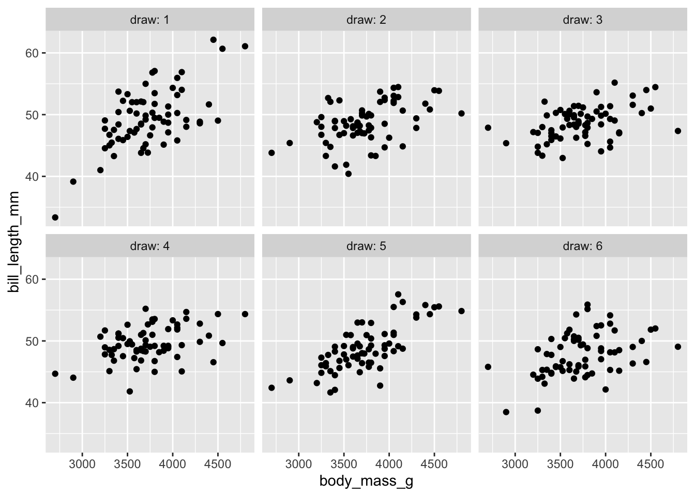
With predict(), we can use the entire posterior-predictive distribution to simulate new data based on the values of our predictor variable(s). To give you a better sense of what’s happening under the hood, here’s an as_draws_df() based alternative.
set.seed(1)
# walk this code through
as_draws_df(fit1.b) %>%
rename(beta0 = b_Intercept,
beta1 = b_body_mass_g) %>%
select(.draw, beta0, beta1, sigma) %>%
slice_sample(n = 6) %>%
expand_grid(chinstrap %>% select(body_mass_g)) %>%
mutate(bill_length_mm = rnorm(n = n(),
mean = beta0 + beta1 * body_mass_g,
sd = sigma)) %>%
ggplot(aes(x = body_mass_g, y = bill_length_mm)) +
geom_point() +
facet_wrap(~ .draw, labeller = label_both)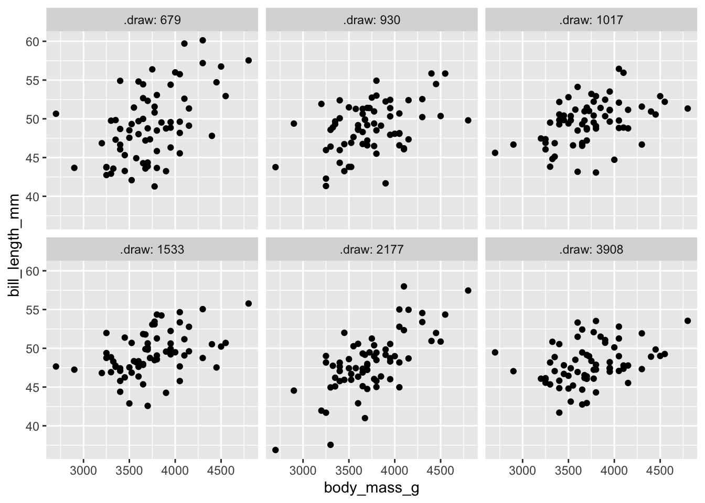
Now take a look at what happens when we plot the densities of several simulated draws.
set.seed(1)
as_draws_df(fit1.b) %>%
rename(beta0 = b_Intercept,
beta1 = b_body_mass_g) %>%
select(.draw, beta0, beta1, sigma) %>%
slice_sample(n = 50) %>% # increase the number of random draws
expand_grid(chinstrap %>% select(body_mass_g)) %>%
mutate(bill_length_mm = rnorm(n = n(),
mean = beta0 + beta1 * body_mass_g,
sd = sigma)) %>%
ggplot(aes(x = bill_length_mm, group = .draw)) +
geom_density(size = 1/4, color = alpha("black", 1/2)) +
coord_cartesian(xlim = range(chinstrap$bill_length_mm) + c(-2, 2))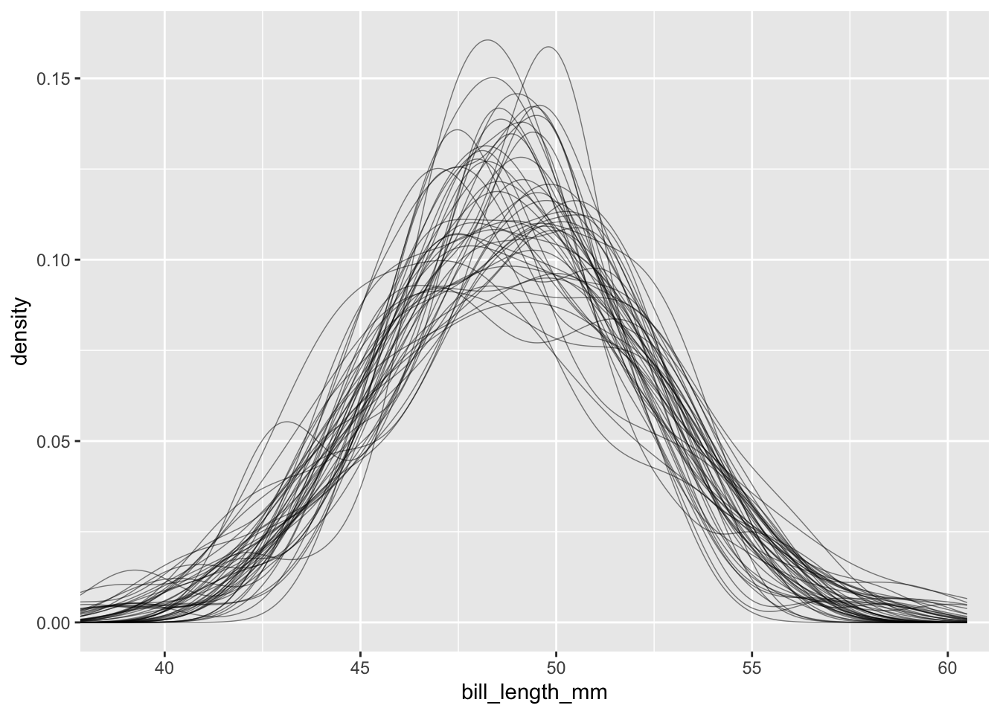
The similarities and differences among the individual density lines give you a sense of the (un)certainty of the posterior-predictive distribution.
This may be a good time for you to work on Exercise 1 (see end of the document)
#Part 4: Beginning to look at priors
Bayes’ rule
Bayes’ theorem will allow us to determine the plausibility of various values of our parameter(s) of interest, \(\theta\), given the data \(d\), which we can express formally as \(\Pr(\theta \mid d)\). Bayes’ rule takes on the form
\[ \Pr(\theta \mid d) = \frac{\Pr(d \mid \theta) \Pr(\theta)}{\Pr(d)}. \]
where
- \(\Pr(d \mid \theta)\) is the likelihood,
- \(\Pr(\theta)\) is the prior,
- \(\Pr(d)\) is the average probability of the data, and
- \(\Pr(\theta \mid d)\) is the posterior.
We can express this in words as
\[ \text{Posterior} = \frac{\text{Probability of the data} \times \text{Prior}}{\text{Average probability of the data}}. \]
The denominator \(\Pr(d)\) is a normalizing constant, and dividing by this constant is what converts the posterior \(\Pr(\theta \mid d)\) into a probability metric.
Default priors
To set your priors with brms, the brm() function has a prior argument. If you don’t explicitly use the prior argument, brm() will use default priors. This is what happened with our fit1.b model from above. We used default priors. If you’d like to see what those priors are, execute fit1.b$prior.
# maybe show str(fit1.b)
fit1.b$prior prior class coef group resp dpar nlpar lb ub
(flat) b
(flat) b body_mass_g
student_t(3, 49.5, 3.6) Intercept
student_t(3, 0, 3.6) sigma 0
source
default
(vectorized)
default
defaultThus, a fuller expression of our model is
\[ \begin{align} \text{bill_length_mm}_i & \sim \operatorname{Normal}(\mu_i, \sigma) \\ \mu_i & = \beta_0 + \beta_1 \text{body_mass_g}_i \\ \beta_0 & \sim \operatorname{Student-t}(3, 49.5, 3.6) \\ \beta_1 & \sim \operatorname{Uniform}(-\infty, \infty) \\ \sigma & \sim \operatorname{Student-t}^+(3, 0, 3.6). \end{align} \]
If we had wanted to see the brm() defaults before fitting the model, we could have used the get_prior() function.
get_prior(
data = chinstrap,
bill_length_mm ~ 1 + body_mass_g
) prior class coef group resp dpar nlpar lb ub
(flat) b
(flat) b body_mass_g
student_t(3, 49.5, 3.6) Intercept
student_t(3, 0, 3.6) sigma 0
source
default
(vectorized)
default
defaultIf you recall, the normal distribution is a member of the Student-t family, where the \(\nu\) (aka degrees of freedom or normality parameter) is set to \(\infty\). To give you a sense, here are the densities of three members of the Student-t family, with varying \(\nu\) values.
crossing(theta = seq(from = -4.5, to = 4.5, length.out = 200),
nu = c(3, 10, Inf)) %>%
mutate(density = dt(x = theta, df = nu)) %>%
ggplot(aes(x = theta, y = density, color = factor(nu))) +
geom_line(linewidth = 1) +
scale_color_viridis_d(expression(nu), option = "A", end = .7) +
labs(title = "3 members of the Student-t family",
x = expression(theta)) +
coord_cartesian(xlim = c(-4, 4))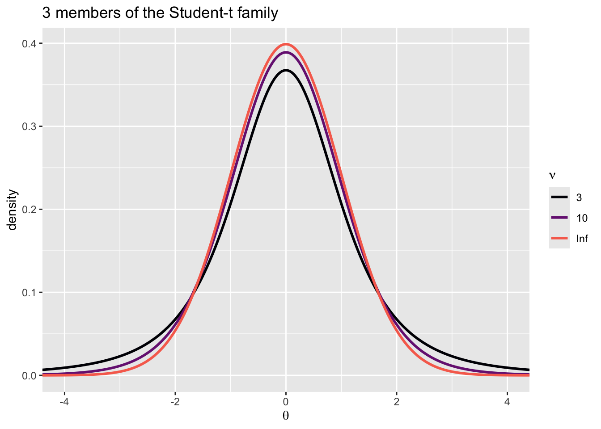
Thus, Student-t distributions have thicker tails when they have smaller \(\nu\) parameters. In the case where \(\nu = 3\), the tails are pretty thick, which means they are more tolerant of more extreme values. And thus priors with small-\(\nu\) parameters will be weaker (i.e., more permissive) than their Gaussian counterparts.
We can visualize functions from ggdist to visualize the default brm() priors. We’ll start with the student_t(3, 49.5, 3.6) \(\beta_0\) prior, and also take the opportunity to compare that with a slightly stronger normal(49.5, 3.6) alternative.
c(prior(student_t(3, 49.5, 3.6)),
prior(normal(49.5, 3.6))) %>%
parse_dist() %>%
ggplot(aes(xdist = .dist_obj, y = prior)) +
stat_halfeye() +
labs(x = expression(italic(p)(beta[0])),
y = NULL) +
coord_cartesian(xlim = c(25, 75))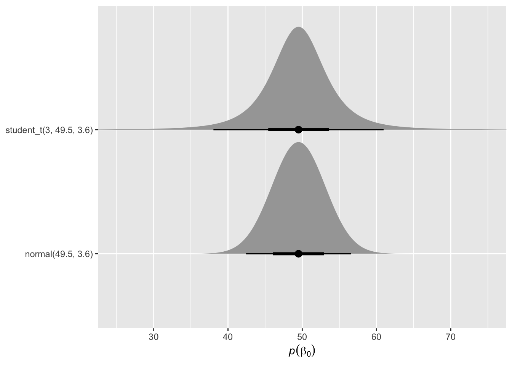
See how that \(n = 3\) parameter in the default prior let do much thicker tails than it’s Gaussian counterpart. We can make the same kind of plot for our default \(\sigma\) prior and its half-Gaussian counterpart.
c(prior(student_t(3, 0, 3.6), lb = 0), # note our use of the lb = 0 argument
prior(normal(0, 3.6), lb = 0)) %>%
parse_dist() %>%
ggplot(aes(xdist = .dist_obj, y = prior)) +
stat_halfeye(point_interval = mean_qi, .width = c(.90, .99)) +
labs(x = expression(italic(p)(sigma)),
y = NULL) +
coord_cartesian(xlim = c(0, 30))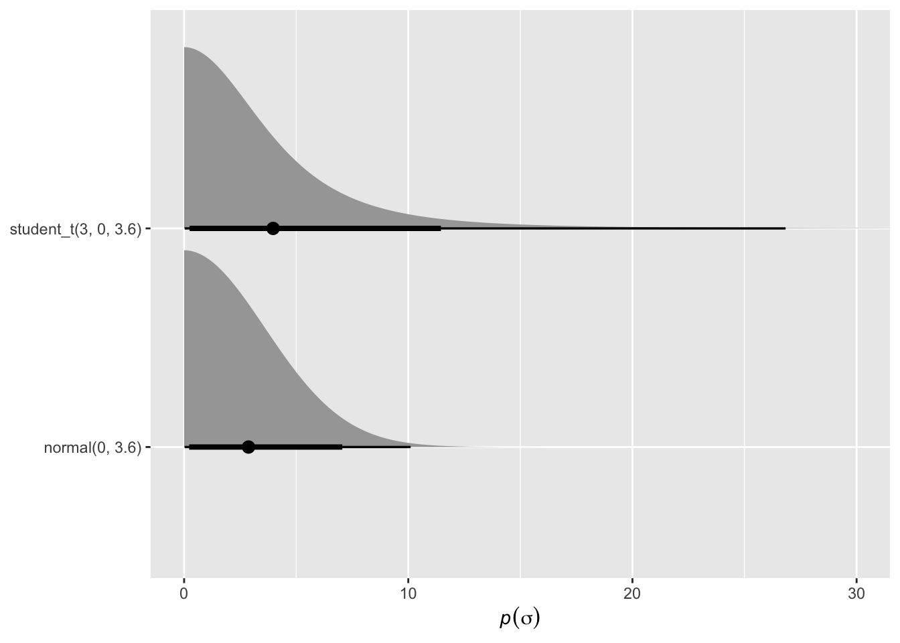
Here’s how we could have explicitly set our priors by hand.
fit2.b <- brm(
data = chinstrap,
bill_length_mm ~ 1 + body_mass_g,
prior = prior(student_t(3, 49.5, 3.6), class = Intercept) +
prior(student_t(3, 0, 3.6), class = sigma, lb = 0)
)Compare the results.
summary(fit1.b) Family: gaussian
Links: mu = identity; sigma = identity
Formula: bill_length_mm ~ 1 + body_mass_g
Data: chinstrap (Number of observations: 68)
Draws: 4 chains, each with iter = 2000; warmup = 1000; thin = 1;
total post-warmup draws = 4000
Regression Coefficients:
Estimate Est.Error l-95% CI u-95% CI Rhat Bulk_ESS Tail_ESS
Intercept 32.18 3.52 25.36 39.14 1.00 4984 3109
body_mass_g 0.00 0.00 0.00 0.01 1.00 4956 2935
Further Distributional Parameters:
Estimate Est.Error l-95% CI u-95% CI Rhat Bulk_ESS Tail_ESS
sigma 2.93 0.26 2.48 3.48 1.00 1921 1869
Draws were sampled using sampling(NUTS). For each parameter, Bulk_ESS
and Tail_ESS are effective sample size measures, and Rhat is the potential
scale reduction factor on split chains (at convergence, Rhat = 1).summary(fit2.b) Family: gaussian
Links: mu = identity; sigma = identity
Formula: bill_length_mm ~ 1 + body_mass_g
Data: chinstrap (Number of observations: 68)
Draws: 4 chains, each with iter = 2000; warmup = 1000; thin = 1;
total post-warmup draws = 4000
Regression Coefficients:
Estimate Est.Error l-95% CI u-95% CI Rhat Bulk_ESS Tail_ESS
Intercept 32.13 3.57 24.99 38.99 1.00 4691 2986
body_mass_g 0.00 0.00 0.00 0.01 1.00 4740 2970
Further Distributional Parameters:
Estimate Est.Error l-95% CI u-95% CI Rhat Bulk_ESS Tail_ESS
sigma 2.94 0.27 2.47 3.52 1.00 2019 1693
Draws were sampled using sampling(NUTS). For each parameter, Bulk_ESS
and Tail_ESS are effective sample size measures, and Rhat is the potential
scale reduction factor on split chains (at convergence, Rhat = 1).QUESTION 2 Are the priors the same? What do you think is going on?
Answer: ….
I guess technically they are the same since the parameter values are the same except that for fit2 we manually define the prior whereas fit1 just use it as default. The slight difference is likely due to sampling variability.
If you want to learn more about the default prior settings for brms, read through the set_prior section of the brms reference manual (https://CRAN.R-project.org/package=brms/brms.pdf).
EXERCISE 1
In the previous lab, we made a subset of the penguins data called gentoo, which was only the cases for which species == "Gentoo". Do that again and refit the Bayesian model to those data. Remake some of the figures (From Part 3) in this file with the new version of the model?
Answer/ Your solution below:
gentoo <- penguins %>%
filter(species == 'Gentoo')
gentoo <- na.omit(gentoo)
fit_gentoo <- brm(data = gentoo, bill_length_mm ~ 1 + body_mass_g)Compiling Stan program...Trying to compile a simple C fileRunning /Library/Frameworks/R.framework/Resources/bin/R CMD SHLIB foo.c
using C compiler: ‘Apple clang version 14.0.3 (clang-1403.0.22.14.1)’
using SDK: ‘MacOSX13.3.sdk’
clang -arch arm64 -I"/Library/Frameworks/R.framework/Resources/include" -DNDEBUG -I"/Library/Frameworks/R.framework/Versions/4.4-arm64/Resources/library/Rcpp/include/" -I"/Library/Frameworks/R.framework/Versions/4.4-arm64/Resources/library/RcppEigen/include/" -I"/Library/Frameworks/R.framework/Versions/4.4-arm64/Resources/library/RcppEigen/include/unsupported" -I"/Library/Frameworks/R.framework/Versions/4.4-arm64/Resources/library/BH/include" -I"/Library/Frameworks/R.framework/Versions/4.4-arm64/Resources/library/StanHeaders/include/src/" -I"/Library/Frameworks/R.framework/Versions/4.4-arm64/Resources/library/StanHeaders/include/" -I"/Library/Frameworks/R.framework/Versions/4.4-arm64/Resources/library/RcppParallel/include/" -I"/Library/Frameworks/R.framework/Versions/4.4-arm64/Resources/library/rstan/include" -DEIGEN_NO_DEBUG -DBOOST_DISABLE_ASSERTS -DBOOST_PENDING_INTEGER_LOG2_HPP -DSTAN_THREADS -DUSE_STANC3 -DSTRICT_R_HEADERS -DBOOST_PHOENIX_NO_VARIADIC_EXPRESSION -D_HAS_AUTO_PTR_ETC=0 -include '/Library/Frameworks/R.framework/Versions/4.4-arm64/Resources/library/StanHeaders/include/stan/math/prim/fun/Eigen.hpp' -D_REENTRANT -DRCPP_PARALLEL_USE_TBB=1 -I/opt/R/arm64/include -fPIC -falign-functions=64 -Wall -g -O2 -c foo.c -o foo.o
In file included from <built-in>:1:
In file included from /Library/Frameworks/R.framework/Versions/4.4-arm64/Resources/library/StanHeaders/include/stan/math/prim/fun/Eigen.hpp:22:
In file included from /Library/Frameworks/R.framework/Versions/4.4-arm64/Resources/library/RcppEigen/include/Eigen/Dense:1:
In file included from /Library/Frameworks/R.framework/Versions/4.4-arm64/Resources/library/RcppEigen/include/Eigen/Core:19:
/Library/Frameworks/R.framework/Versions/4.4-arm64/Resources/library/RcppEigen/include/Eigen/src/Core/util/Macros.h:679:10: fatal error: 'cmath' file not found
#include <cmath>
^~~~~~~
1 error generated.
make: *** [foo.o] Error 1Start sampling
SAMPLING FOR MODEL 'anon_model' NOW (CHAIN 1).
Chain 1:
Chain 1: Gradient evaluation took 1.7e-05 seconds
Chain 1: 1000 transitions using 10 leapfrog steps per transition would take 0.17 seconds.
Chain 1: Adjust your expectations accordingly!
Chain 1:
Chain 1:
Chain 1: Iteration: 1 / 2000 [ 0%] (Warmup)
Chain 1: Iteration: 200 / 2000 [ 10%] (Warmup)
Chain 1: Iteration: 400 / 2000 [ 20%] (Warmup)
Chain 1: Iteration: 600 / 2000 [ 30%] (Warmup)
Chain 1: Iteration: 800 / 2000 [ 40%] (Warmup)
Chain 1: Iteration: 1000 / 2000 [ 50%] (Warmup)
Chain 1: Iteration: 1001 / 2000 [ 50%] (Sampling)
Chain 1: Iteration: 1200 / 2000 [ 60%] (Sampling)
Chain 1: Iteration: 1400 / 2000 [ 70%] (Sampling)
Chain 1: Iteration: 1600 / 2000 [ 80%] (Sampling)
Chain 1: Iteration: 1800 / 2000 [ 90%] (Sampling)
Chain 1: Iteration: 2000 / 2000 [100%] (Sampling)
Chain 1:
Chain 1: Elapsed Time: 0.045 seconds (Warm-up)
Chain 1: 0.027 seconds (Sampling)
Chain 1: 0.072 seconds (Total)
Chain 1:
SAMPLING FOR MODEL 'anon_model' NOW (CHAIN 2).
Chain 2:
Chain 2: Gradient evaluation took 1e-06 seconds
Chain 2: 1000 transitions using 10 leapfrog steps per transition would take 0.01 seconds.
Chain 2: Adjust your expectations accordingly!
Chain 2:
Chain 2:
Chain 2: Iteration: 1 / 2000 [ 0%] (Warmup)
Chain 2: Iteration: 200 / 2000 [ 10%] (Warmup)
Chain 2: Iteration: 400 / 2000 [ 20%] (Warmup)
Chain 2: Iteration: 600 / 2000 [ 30%] (Warmup)
Chain 2: Iteration: 800 / 2000 [ 40%] (Warmup)
Chain 2: Iteration: 1000 / 2000 [ 50%] (Warmup)
Chain 2: Iteration: 1001 / 2000 [ 50%] (Sampling)
Chain 2: Iteration: 1200 / 2000 [ 60%] (Sampling)
Chain 2: Iteration: 1400 / 2000 [ 70%] (Sampling)
Chain 2: Iteration: 1600 / 2000 [ 80%] (Sampling)
Chain 2: Iteration: 1800 / 2000 [ 90%] (Sampling)
Chain 2: Iteration: 2000 / 2000 [100%] (Sampling)
Chain 2:
Chain 2: Elapsed Time: 0.036 seconds (Warm-up)
Chain 2: 0.027 seconds (Sampling)
Chain 2: 0.063 seconds (Total)
Chain 2:
SAMPLING FOR MODEL 'anon_model' NOW (CHAIN 3).
Chain 3:
Chain 3: Gradient evaluation took 1e-06 seconds
Chain 3: 1000 transitions using 10 leapfrog steps per transition would take 0.01 seconds.
Chain 3: Adjust your expectations accordingly!
Chain 3:
Chain 3:
Chain 3: Iteration: 1 / 2000 [ 0%] (Warmup)
Chain 3: Iteration: 200 / 2000 [ 10%] (Warmup)
Chain 3: Iteration: 400 / 2000 [ 20%] (Warmup)
Chain 3: Iteration: 600 / 2000 [ 30%] (Warmup)
Chain 3: Iteration: 800 / 2000 [ 40%] (Warmup)
Chain 3: Iteration: 1000 / 2000 [ 50%] (Warmup)
Chain 3: Iteration: 1001 / 2000 [ 50%] (Sampling)
Chain 3: Iteration: 1200 / 2000 [ 60%] (Sampling)
Chain 3: Iteration: 1400 / 2000 [ 70%] (Sampling)
Chain 3: Iteration: 1600 / 2000 [ 80%] (Sampling)
Chain 3: Iteration: 1800 / 2000 [ 90%] (Sampling)
Chain 3: Iteration: 2000 / 2000 [100%] (Sampling)
Chain 3:
Chain 3: Elapsed Time: 0.029 seconds (Warm-up)
Chain 3: 0.029 seconds (Sampling)
Chain 3: 0.058 seconds (Total)
Chain 3:
SAMPLING FOR MODEL 'anon_model' NOW (CHAIN 4).
Chain 4:
Chain 4: Gradient evaluation took 1e-06 seconds
Chain 4: 1000 transitions using 10 leapfrog steps per transition would take 0.01 seconds.
Chain 4: Adjust your expectations accordingly!
Chain 4:
Chain 4:
Chain 4: Iteration: 1 / 2000 [ 0%] (Warmup)
Chain 4: Iteration: 200 / 2000 [ 10%] (Warmup)
Chain 4: Iteration: 400 / 2000 [ 20%] (Warmup)
Chain 4: Iteration: 600 / 2000 [ 30%] (Warmup)
Chain 4: Iteration: 800 / 2000 [ 40%] (Warmup)
Chain 4: Iteration: 1000 / 2000 [ 50%] (Warmup)
Chain 4: Iteration: 1001 / 2000 [ 50%] (Sampling)
Chain 4: Iteration: 1200 / 2000 [ 60%] (Sampling)
Chain 4: Iteration: 1400 / 2000 [ 70%] (Sampling)
Chain 4: Iteration: 1600 / 2000 [ 80%] (Sampling)
Chain 4: Iteration: 1800 / 2000 [ 90%] (Sampling)
Chain 4: Iteration: 2000 / 2000 [100%] (Sampling)
Chain 4:
Chain 4: Elapsed Time: 0.036 seconds (Warm-up)
Chain 4: 0.027 seconds (Sampling)
Chain 4: 0.063 seconds (Total)
Chain 4: summary(fit_gentoo) Family: gaussian
Links: mu = identity; sigma = identity
Formula: bill_length_mm ~ 1 + body_mass_g
Data: gentoo (Number of observations: 119)
Draws: 4 chains, each with iter = 2000; warmup = 1000; thin = 1;
total post-warmup draws = 4000
Regression Coefficients:
Estimate Est.Error l-95% CI u-95% CI Rhat Bulk_ESS Tail_ESS
Intercept 26.56 2.19 22.14 30.93 1.00 4268 2754
body_mass_g 0.00 0.00 0.00 0.00 1.00 4456 2833
Further Distributional Parameters:
Estimate Est.Error l-95% CI u-95% CI Rhat Bulk_ESS Tail_ESS
sigma 2.34 0.16 2.06 2.68 1.01 1541 1577
Draws were sampled using sampling(NUTS). For each parameter, Bulk_ESS
and Tail_ESS are effective sample size measures, and Rhat is the potential
scale reduction factor on split chains (at convergence, Rhat = 1).as_draws_df(fit_gentoo) %>%
rename(`beta[0]` = b_Intercept,
`beta[1]` = b_body_mass_g) %>%
pivot_longer(cols = c(`beta[0]`, `beta[1]`, sigma),
names_to = "parameter") %>%
ggplot(aes(x = value)) +
stat_histinterval(.width = .95, normalize = "panels") +
scale_y_continuous(NULL, breaks = NULL) +
labs(title = "fit_gentoo",
x = "parameter space") +
facet_wrap(~ parameter, scales = "free", labeller = label_parsed)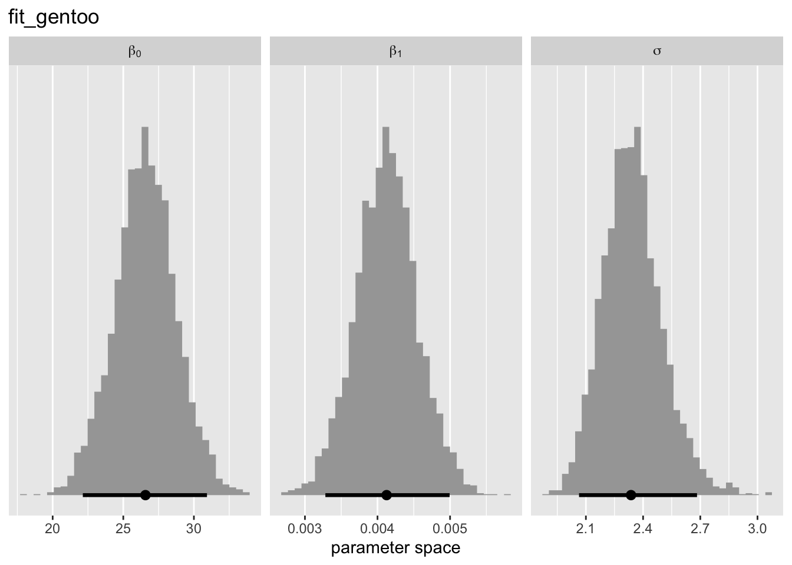
conditional_effects(fit_gentoo) %>%
plot(points = TRUE)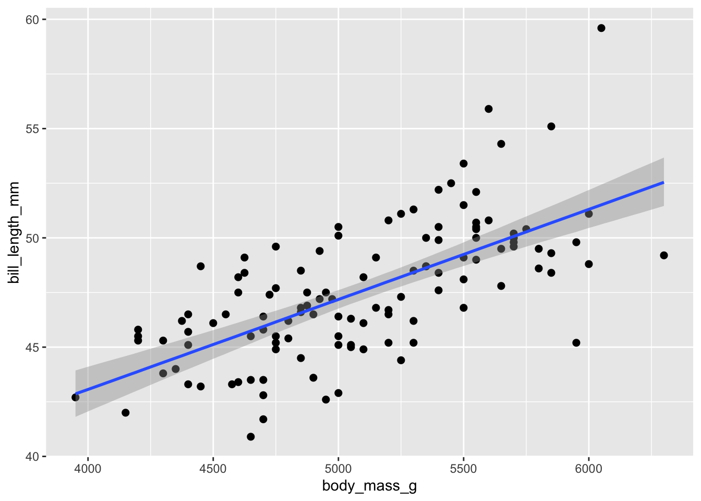
nd_gentoo <- tibble(body_mass_g = seq(
from = min(gentoo$body_mass_g),
to = max(gentoo$body_mass_g),
length.out = 100))
fitted(fit_gentoo,
newdata = nd_gentoo,
probs = c(.025, .975, .25, .75)) %>%
data.frame() %>%
bind_cols(nd_gentoo) %>%
ggplot(aes(x = body_mass_g)) +
# 95% range
geom_ribbon(aes(ymin = Q2.5, ymax = Q97.5),
alpha = 1/4) +
# 50% range
geom_ribbon(aes(ymin = Q25, ymax = Q75),
alpha = 1/4) +
geom_line(aes(y = Estimate)) +
geom_point(data = gentoo,
aes(y = bill_length_mm))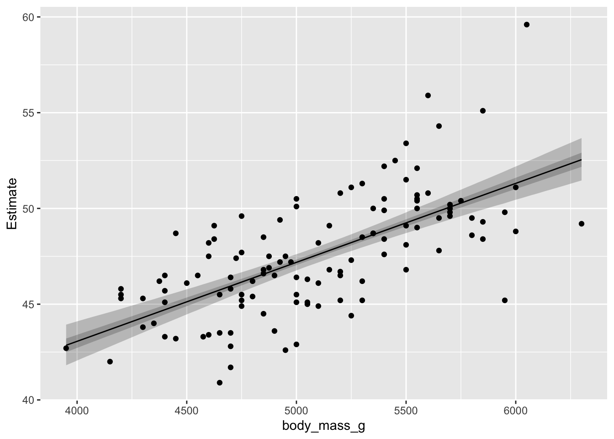
fitted(fit_gentoo,
newdata = nd_gentoo,
summary = F) %>%
data.frame() %>%
set_names(pull(nd_gentoo, body_mass_g)) %>%
mutate(draw = 1:n()) %>%
pivot_longer(-draw) %>%
mutate(body_mass_g = as.double(name)) %>%
ggplot(aes(x = body_mass_g, y = value, fill = after_stat(.width))) +
# make more ribbons
stat_lineribbon(.width = ppoints(50)) +
scale_fill_distiller(limits = 0:1) +
coord_cartesian(ylim = range(gentoo$bill_length_mm)) +
theme_classic()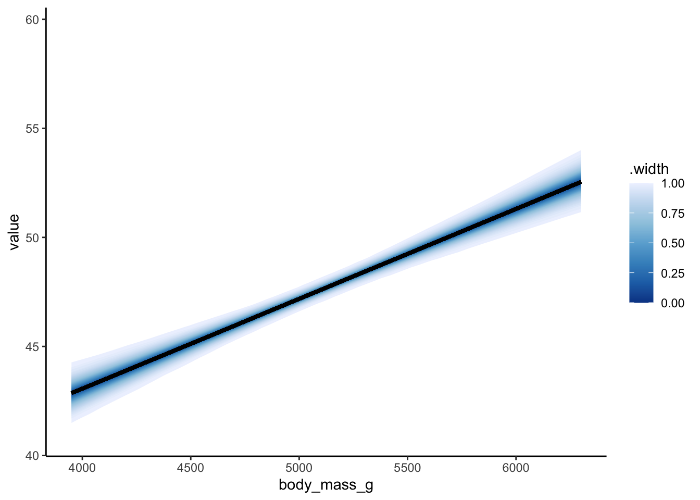
f_gentoo <- fitted(fit_gentoo, newdata = nd_gentoo) %>%
data.frame() %>%
bind_cols(nd_gentoo)
predict(fit_gentoo, newdata = nd_gentoo) %>%
data.frame() %>%
bind_cols(nd_gentoo) %>%
ggplot(aes(x = body_mass_g)) +
# 95% posterior-predictive range
geom_ribbon(aes(ymin = Q2.5, ymax = Q97.5),
alpha = 1/4) +
# 95% conditional mean range
geom_ribbon(data = f_gentoo,
aes(ymin = Q2.5, ymax = Q97.5),
alpha = 1/4) +
# posterior mean of the conditional mean
geom_line(data = f_gentoo,
aes(y = Estimate)) +
# original data
geom_point(data = gentoo,
aes(y = bill_length_mm)) +
coord_cartesian(ylim = range(gentoo$bill_length_mm))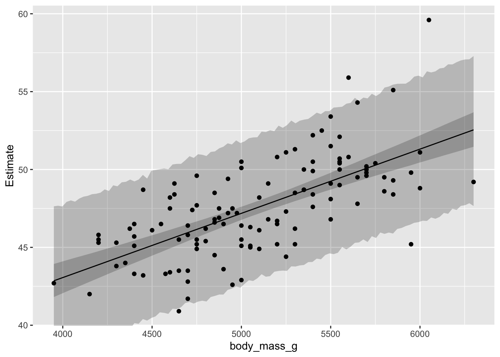
set.seed(1)
# walk this code through
as_draws_df(fit_gentoo) %>%
rename(beta0 = b_Intercept,
beta1 = b_body_mass_g) %>%
select(.draw, beta0, beta1, sigma) %>%
slice_sample(n = 6) %>%
expand_grid(gentoo %>% select(body_mass_g)) %>%
mutate(bill_length_mm = rnorm(n = n(),
mean = beta0 + beta1 * body_mass_g,
sd = sigma)) %>%
ggplot(aes(x = body_mass_g, y = bill_length_mm)) +
geom_point() +
facet_wrap(~ .draw, labeller = label_both)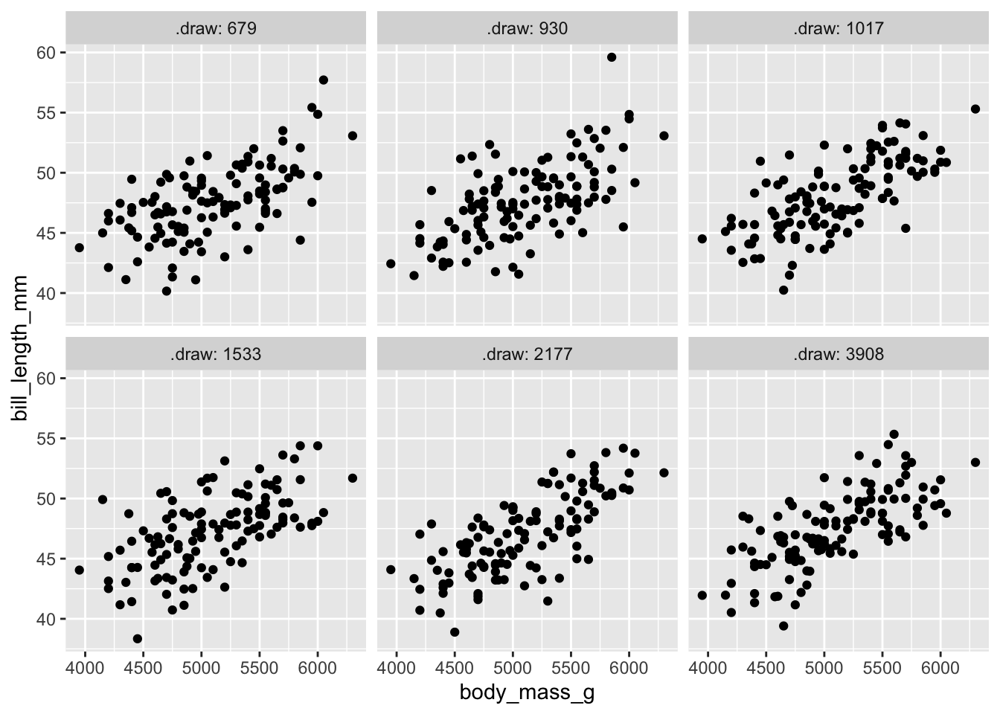
set.seed(1)
as_draws_df(fit_gentoo) %>%
rename(beta0 = b_Intercept,
beta1 = b_body_mass_g) %>%
select(.draw, beta0, beta1, sigma) %>%
slice_sample(n = 50) %>% # increase the number of random draws
expand_grid(gentoo %>% select(body_mass_g)) %>%
mutate(bill_length_mm = rnorm(n = n(),
mean = beta0 + beta1 * body_mass_g,
sd = sigma)) %>%
ggplot(aes(x = bill_length_mm, group = .draw)) +
geom_density(size = 1/4, color = alpha("black", 1/2)) +
coord_cartesian(xlim = range(gentoo$bill_length_mm) + c(-5, 0))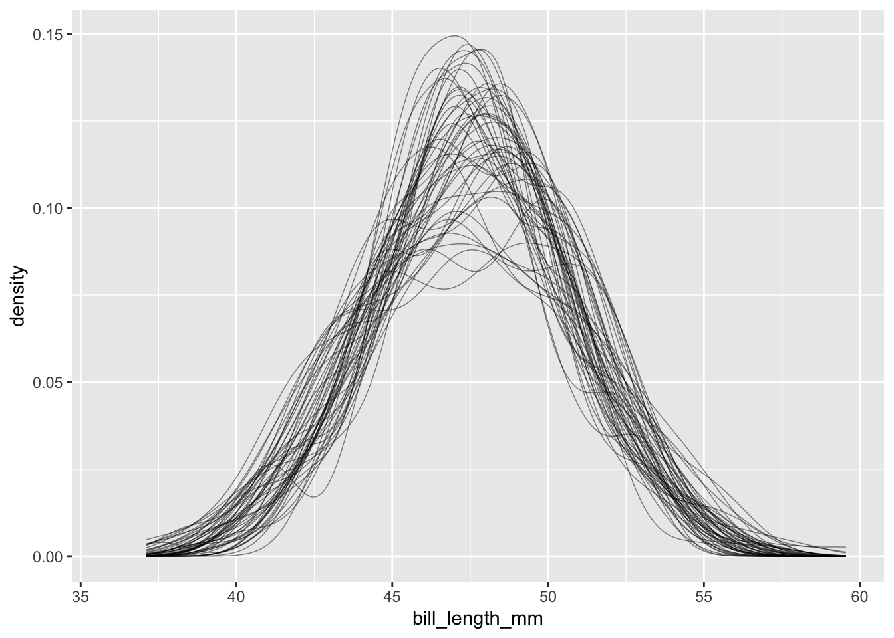
References
Kruschke, J. K. (2015). Doing Bayesian data analysis: A tutorial with R, JAGS, and Stan. Academic Press. https://sites.google.com/site/doingbayesiandataanalysis/